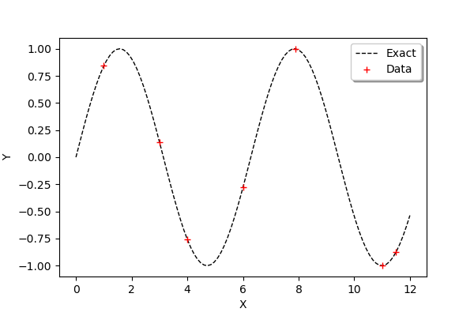
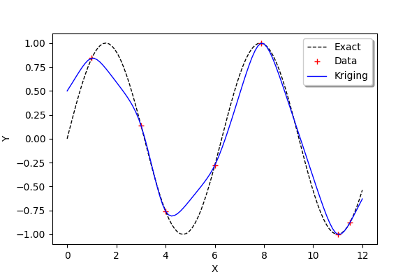
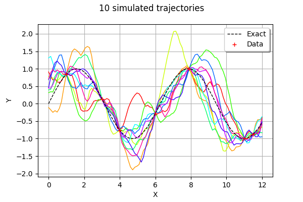

Simulate new trajectories from a kriging metamodel¶
The main goal of this example is to show how to simulate new trajectories from a kriging metamodel.
Introduction¶
We consider the sine function:
for any .
We want to create a metamodel of this function. This is why we create a sample of  observations of the function:
observations of the function:
for , where  is the i-th input and
is the i-th input and  is the corresponding output.
is the corresponding output.
We consider the seven following inputs :
|
1 |
2 |
3 |
4 |
5 |
6 |
7 |
|---|---|---|---|---|---|---|---|
|
1 |
3 |
4 |
6 |
7.9 |
11 |
11.5 |

We are going to consider a kriging metamodel with a
constant trend,
a Matern covariance model.
Creation of the metamodel¶
We begin by defining the function g as a symbolic function. Then we define the x_train variable which contains the inputs of the design of experiments of the training step. Then we compute the y_train corresponding outputs. The variable n_train is the size of the training design of experiments.
[1]:
import numpy as np
import openturns as ot
[2]:
g = ot.SymbolicFunction(['x'], ['sin(x)'])
[3]:
x_train = ot.Sample([1.,3.,4.,6.,7.9,11., 11.5],1)
y_train = g(x_train)
n_train = x_train.getSize()
n_train
[3]:
7
In order to compare the function and its metamodel, we use a test (i.e. validation) design of experiments made of a regular grid of 100 points from 0 to 12. Then we convert this grid into a Sample and we compute the outputs of the function on this sample.
[4]:
xmin = 0.
xmax = 12.
n_test = 100
step = (xmax-xmin)/(n_test-1)
myRegularGrid = ot.RegularGrid(xmin, step, n_test)
x_test_coord = myRegularGrid.getValues()
x_test = ot.Sample(x_test_coord,1)
y_test = g(x_test)
In order to observe the function and the location of the points in the input design of experiments, we define the following functions which plots the data.
[5]:
def plot_data_train(x_train,y_train):
'''Plot the data (x_train,y_train) as a Cloud, in red'''
graph_train = ot.Cloud(x_train,y_train)
graph_train.setColor("red")
graph_train.setLegend("Data")
return graph_train
[6]:
def plot_data_test(x_test,y_test):
'''Plot the data (x_test,y_test) as a Curve, in dashed black'''
graphF = ot.Curve(x_test,y_test)
graphF.setLegend("Exact")
graphF.setColor("black")
graphF.setLineStyle("dashed")
return graphF
[7]:
graph = ot.Graph()
graph.add(plot_data_test(x_test,y_test))
graph.add(plot_data_train(x_train,y_train))
graph.setAxes(True)
graph.setXTitle("X")
graph.setYTitle("Y")
graph.setLegendPosition("topright")
graph
[7]:

We use the ConstantBasisFactory class to define the trend and the MaternModel class to define the covariance model. This Matérn model is based on the regularity parameter  .
.
[8]:
dimension = 1
basis = ot.ConstantBasisFactory(dimension).build()
covarianceModel = ot.MaternModel([1.]*dimension, 1.5)
algo = ot.KrigingAlgorithm(x_train, y_train, covarianceModel, basis)
algo.run()
krigingResult = algo.getResult()
krigingResult
[8]:
KrigingResult(covariance models=MaternModel(scale=[0.318568], amplitude=[0.822262], nu=1.5), covariance coefficients=0 : [ 1.13905 ]
1 : [ 1.01761 ]
2 : [ -1.76279 ]
3 : [ -0.559147 ]
4 : [ 1.78757 ]
5 : [ -1.61945 ]
6 : [ -0.00284256 ], basis=[Basis( [class=LinearEvaluation name=Unnamed center=[0] constant=[1] linear=[[ 0 ]]] )], trend coefficients=[[0.00736738]])
We observe that the scale and amplitude hyper-parameters have been optimized by the run method. Then we get the metamodel with getMetaModel and evaluate the outputs of the metamodel on the test design of experiments.
[9]:
krigeageMM = krigingResult.getMetaModel()
y_test_MM = krigeageMM(x_test)
The following function plots the kriging data.
[10]:
def plot_data_kriging(x_test,y_test_MM):
'''Plots (x_test,y_test_MM) from the metamodel as a Curve, in blue'''
graphK = ot.Curve(x_test,y_test_MM)
graphK.setColor("blue")
graphK.setLegend("Kriging")
return graphK
[11]:
graph = ot.Graph()
graph.add(plot_data_test(x_test,y_test))
graph.add(plot_data_train(x_train,y_train))
graph.add(plot_data_kriging(x_test,y_test_MM))
graph.setAxes(True)
graph.setXTitle("X")
graph.setYTitle("Y")
graph.setLegendPosition("topright")
graph
[11]:

Simulate new trajectories¶
In order to generate new trajectories of the conditioned gaussian process, we couild technically use the KrigingRandomVector class, because it provides the getSample method that we need. However, the KrigingRandomVector class was more specifically designed to create a RandomVector so that it can feed, for example, a function which has a field as input argument.
This is why we use the ConditionedGaussianProcess, which provides a Process.
[12]:
n_test = 100
step = (xmax-xmin)/(n_test-1)
myRegularGrid = ot.RegularGrid(xmin, step, n_test)
vertices = myRegularGrid.getVertices()
If we directly use the vertices values, we get:
RuntimeError: InternalException : Error: the matrix is not definite positive.
Indeed, some points in vertices are also in x_train. This is why the conditioned covariance matrix is singular at these points.
This is why we define the following function which deletes points in vertices which are also found in x_train.
[13]:
def deleteCommonValues(x_train,x_test):
'''
Delete from x_test the values which are in x_train so that
values in x_test have no interect with x_train.
'''
x_test_filtered = x_test # Initialize
for x_train_value in x_train:
print("Checking %s" % (x_train_value))
indices = np.argwhere(x_test==x_train_value)
if len(indices) == 1:
print(" Delete %s" % (x_train_value))
x_test_filtered = np.delete(x_test_filtered, indices[0, 0])
else:
print(" OK")
return x_test_filtered
[14]:
vertices_filtered = deleteCommonValues(np.array(x_train.asPoint()),np.array(vertices.asPoint()))
Checking 1.0
OK
Checking 3.0
OK
Checking 4.0
Delete 4.0
Checking 6.0
OK
Checking 7.9
OK
Checking 11.0
OK
Checking 11.5
OK
[15]:
evaluationMesh = ot.Mesh(ot.Sample(vertices_filtered,1))
[16]:
process = ot.ConditionedGaussianProcess(krigingResult, evaluationMesh)
[17]:
trajectories = process.getSample(10)
type(trajectories)
[17]:
openturns.func.ProcessSample
The getSample method returns a ProcessSample. By comparison, the getSample method of a KrigingRandomVector would return a Sample.
[18]:
graph = trajectories.drawMarginal()
graph.add(plot_data_test(x_test,y_test))
graph.add(plot_data_train(x_train,y_train))
graph.setAxes(True)
graph.setXTitle("X")
graph.setYTitle("Y")
graph.setLegendPosition("topright")
graph.setTitle("10 simulated trajectories")
graph
[18]:

References¶
Metamodeling with Gaussian processes, Bertrand Iooss, EDF R&D, 2014, www.gdr-mascotnum.fr/media/sssamo14_iooss.pdf